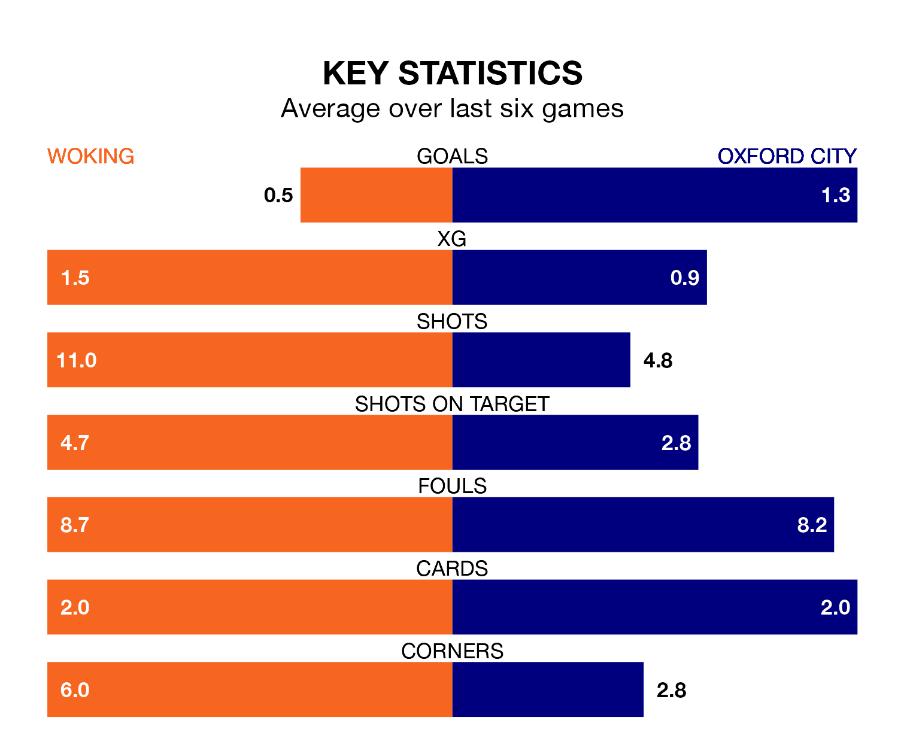

Tuesday's late match at the Laithwaite Community Stadium sees the league's two bottom sides face each other, as Woking host rock-bottom Oxford City.
Woking have picked up 30 points from their first 30 National League games, with eight wins and six draws.
That is three points more than Oxford have collected, having won seven and drawn six.
Woking are in bad form in the National League, with one win and a draw from their last six games.
With two wins and four losses over that period, Oxford's form is slightly better – they have taken six points from 18, compared to the Cardinals's four.
With 29 goals in 30 games so far this season, the home side are the league's joint-second-lowest scorers with 1.0 goals per game. But they are conceding fewer than average too, letting in 39 goals at a rate of 1.3 per game.
City are also below average scorers, with 1.4 goals per game, compared to a league average of 1.5. They have conceded 1.9 goals per game.
Woking's last match was on Saturday, a 1-0 loss against Boreham Wood.
Oxford lost 3-2 against Kidderminster Harriers last time out, also on Saturday, with Josh Parker on the scoresheet.
Updated: 10:28 (UTC), 06/02/24